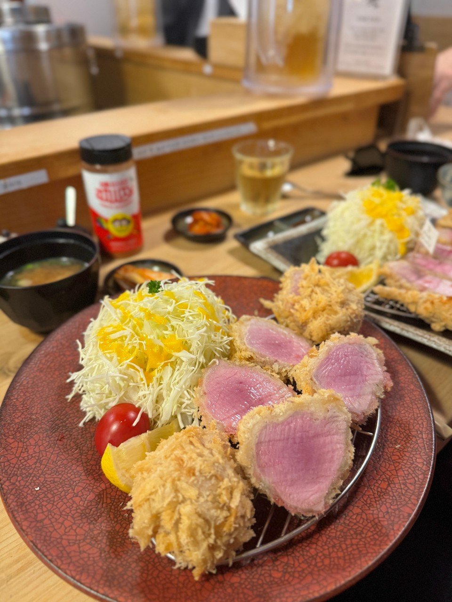
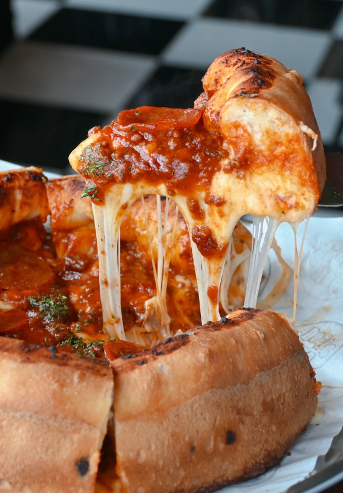
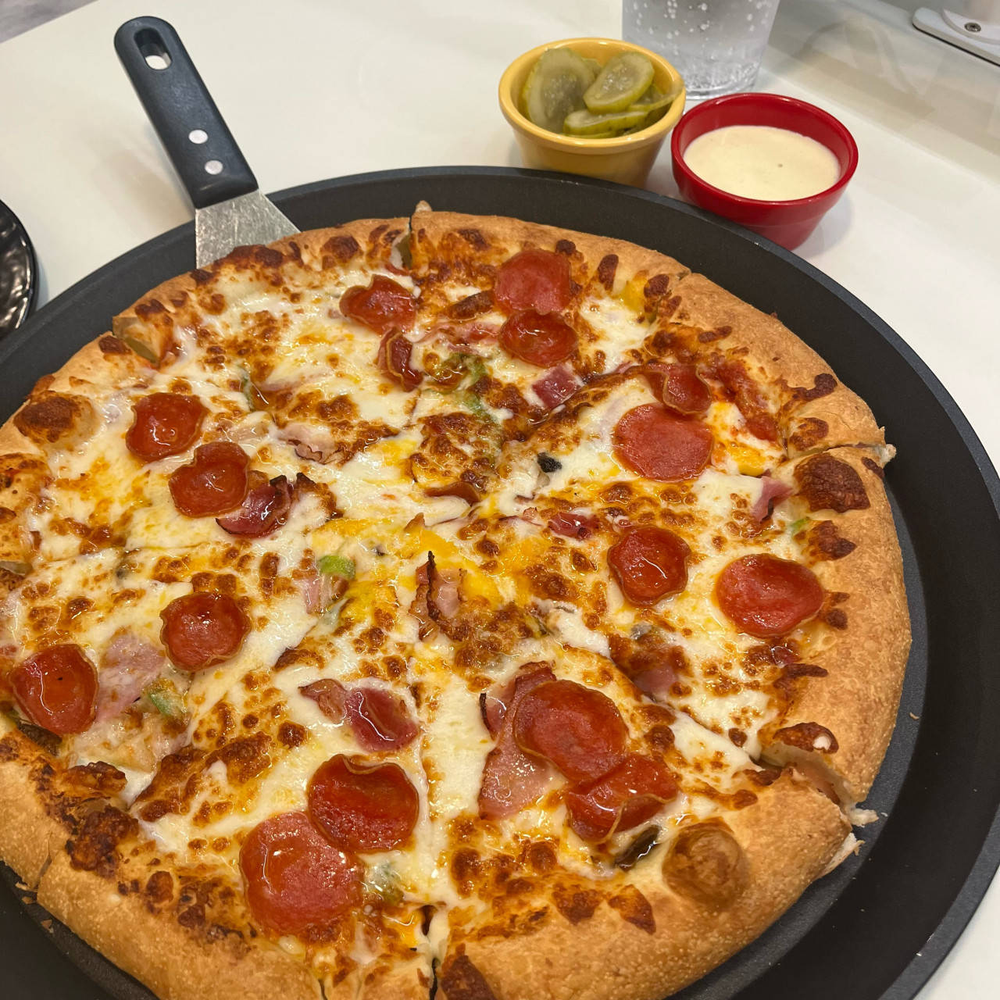

부산 맛집 & 여행 일정
홈
관광지 소개
맛집 / 일정
🌙 다크 모드
로그아웃
오늘 뭐 먹지?
버튼을 누르면 부산 맛집을 랜덤으로 추천합니다.
오늘의 추천 맛집 보기
부산 맛집 추천
1. 수변최고돼지국밥
설명 보기
네이버 리뷰
♡ 찜하기
구수하고 깊은 맛의 돼지국밥으로 여행 피로를 풀기 좋습니다.
2. 톤쇼우 돈까스

설명 보기
네이버 리뷰
♡ 찜하기
촉촉한 레어 히레카츠로 유명한 부산 돈까스 맛집입니다. 바삭한 튀김과 부드러운 육질이 매력적입니다.
3. 매드독스 피자

설명 보기
네이버 리뷰
♡ 찜하기
치즈가 폭발하는 딥디시 스타일 피자로 유명합니다. 진한 풍미와 쫀득한 치즈 식감이 일품입니다.
4. 이재모 피자

설명 보기
네이버 리뷰
♡ 찜하기
도우가 바삭하고 토핑이 풍부한 로컬 피자 맛집입니다.
1일 여행 일정표
추가
시간
내용
삭제
내가 찜한 목록